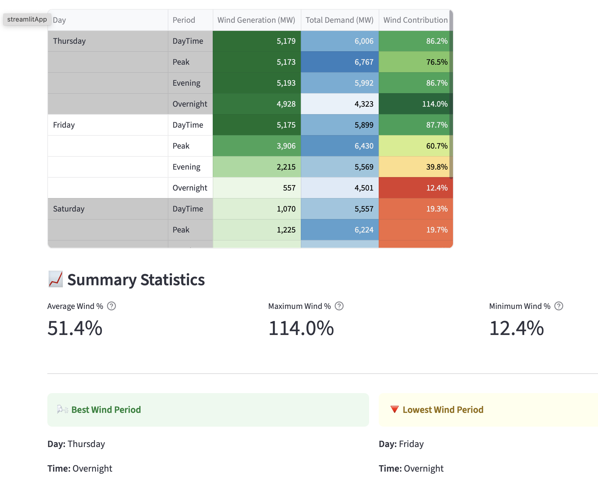
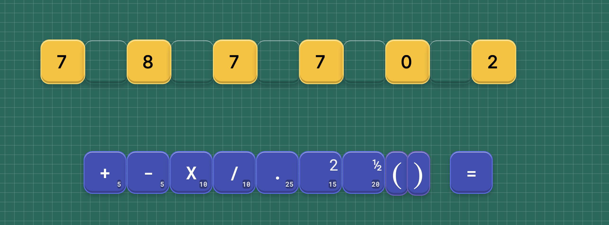

Eoin Condron
Quantitative Researcher | Engineer | Endurance Runner
About Me
Former quant in derivatives trading looking for a career with greater societal impact, particularly in the domains of smart energy grids and AI safety. I'm passionate about climate and have a keen interest in the energy transition. I had a great career at Susequehanna International Group's European HQ in my hometown of Dublin, leading the options desk's quant research team for over a decade. I love to build software, especially with the help of Claude. I love to run, especially marathons and mountain races.
Projects
groupby-lib
Python library for accelerated, memory efficient group-by operations built on top of numpy, pandas, pyarrow and polars. Built in numba, leverages multi-threading, inline filtering and smart caching to boost group-by operations by an order of magnitude in some cases. Created as part of my quant toolbox for quickly generating useful cuts from large, in-memory datasets
 View
Project
View
Project
SEMO(px) Electricity Data Dashboard
A dashboard for viewing useful breakdowns of Irish electricity market data. Helps me strategically charge my EV and avoid heavy load appliances during times with low renewables in the mix.
 Learn More Herenumbble
A numerical puzzle game designed to improve understanding of equation balancing and BOMDAS. Originally intended as an educational tool but is also fun to play for anyone looking to kill some commute time or train their brain
 Play It here!